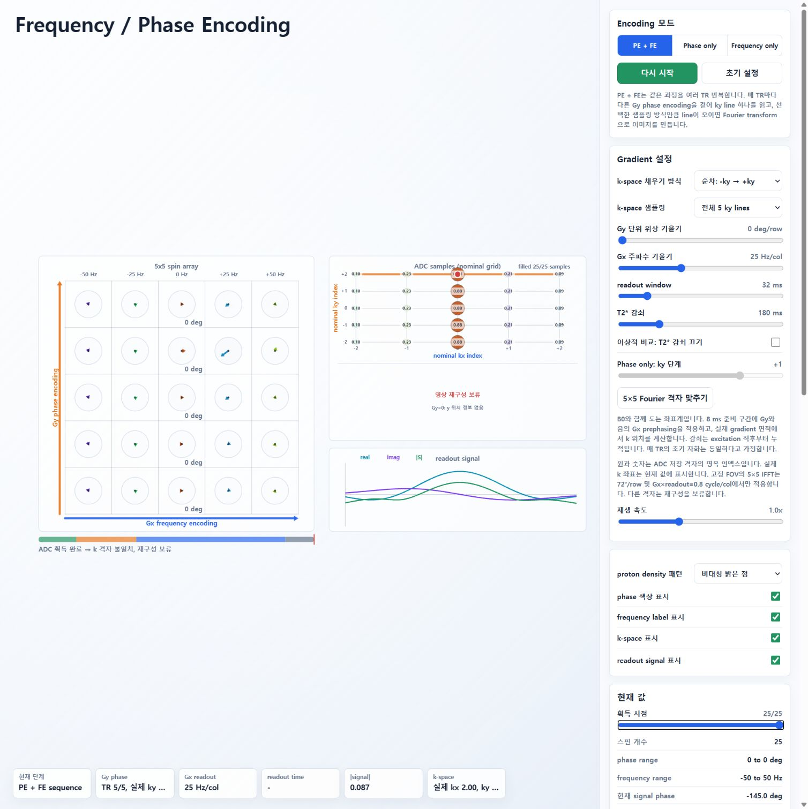
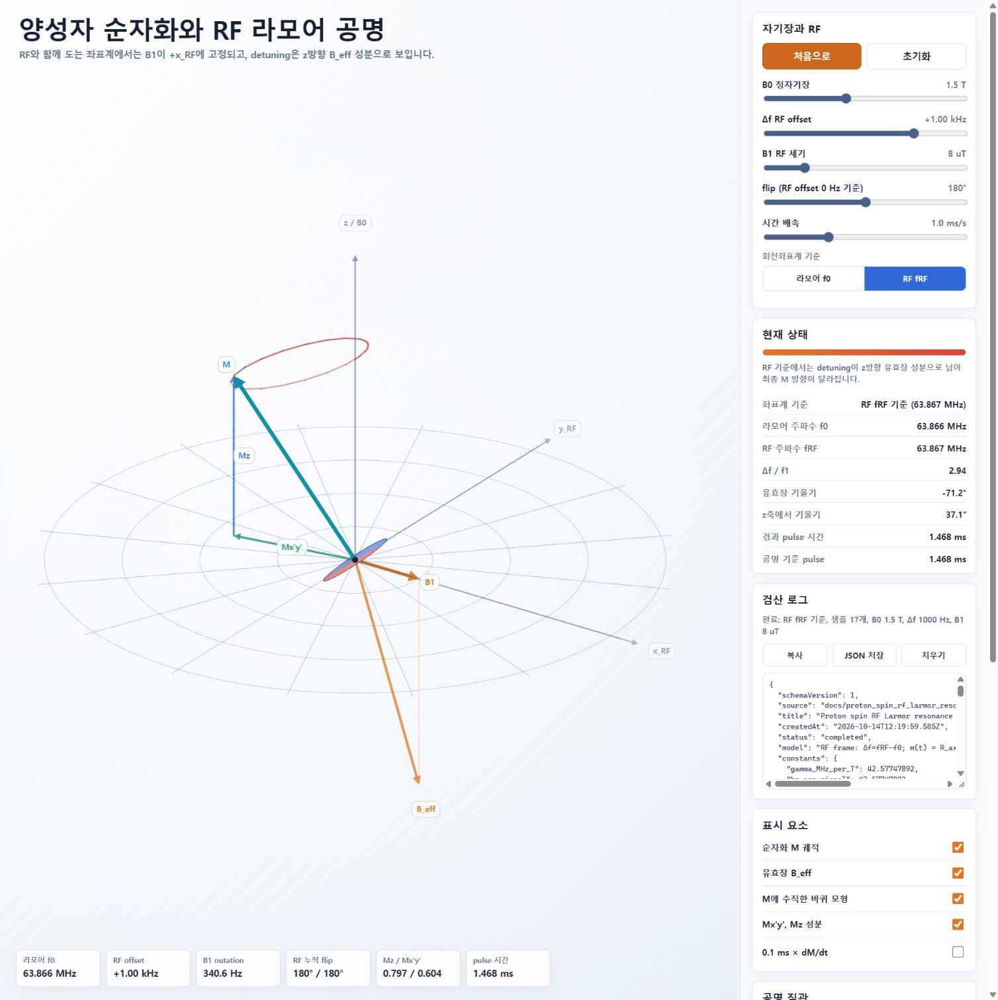
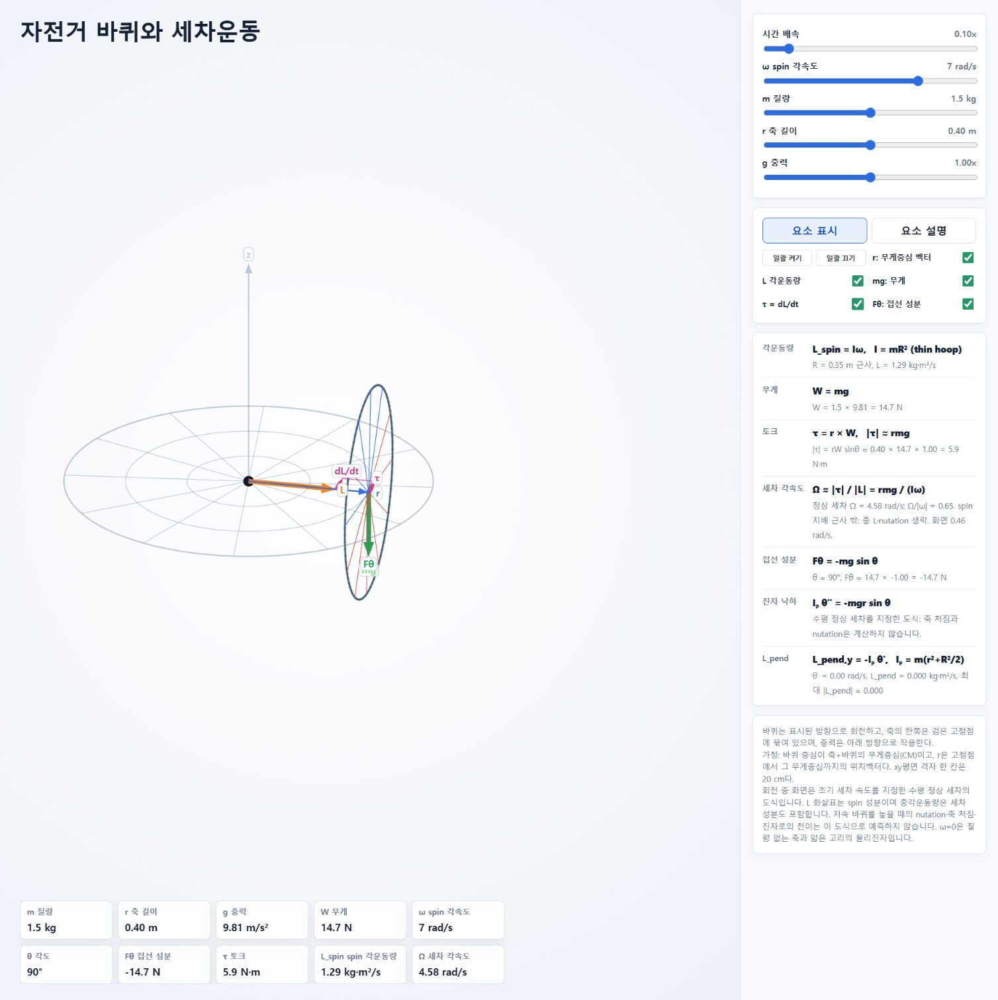

2026-10-14 수정 후 과학 검산
수정 전 보고서는 원본 커밋 0006c3b의 감사 기록으로 보존했습니다. 아래는 그 결과에 따라 바꾼 구현과 검산입니다. 교육용 모델의 가정까지 모두 제거한 실제 장비 모델이라는 의미는 아닙니다.
대상 구현 버전: 6e5e90a.
2026-10-15 기록 정정(W00): 기존 B00/B02/B03/B04 개별 보고서 링크는 파일이 없는 잘못된 참조여서 제거했습니다. 이 문서의 당시 검산 기록을 보존하며, 챕터 전체의 통합 물리 재검토는 물리 검증 계획의 재검토 대기 상태입니다. 아래 시험·브라우저 결과는 2026-10-14의 기록이며 이번 정정에서 새로 시행한 물리 검토가 아닙니다. 당시 원문에 연결된 MR 데스크톱·모바일 5개 화면은 현재 저장소에 보존되어 있지 않습니다. 아래에 원래 파일명을 남기고 존재하는 화면만 연결했습니다.
| 원본 보고서 항목 | 수정 상태 |
|---|---|
| 1·2. 신호–k-space 분리, 시작 kx 불일치 | 수정. 표시 신호와 ADC 저장값이 동일한 함수에서 계산됨. 음의 Gx prephasing 포함 |
| 3. RF offset 부호 | 수정. Δf=fRF−f0일 때 유효장 z성분 및 라머계 변환 부호를 함께 교정. b_eff 문서도 일치시킴 |
| 4. Spin echo | 수정. 각 isochromat에 실제 180° 회전을 적용하고, 이후 원래 Δf를 유지함. 합성 자화의 echo 재형성 표시 |
| 5. TE의 4 ms 차이 | 수정. 순간 pulse의 excitation 중심을 t=0으로 두고 refocusing=TE/2, echo/readout=TE |
| 6. Chemical signal 정규화 | 수정. 현재 신호와 TE 예측값을 동일한 water/fat 벡터 합 및 M0 기준으로 계산 |
| 7. RF 중 detuning | 수정. 자유 RF는 detuning 및 RF 중 T1/T2를 포함한 Bloch 회전 사용 |
| 8. 복소 역변환 허수부 누락 | 수정. 복소 IFFT를 보존하고 magnitude=√(real²+imag²)로 표시 |
| 9. 바퀴 정상 세차의 적용 범위 | 설명 보완. L_spin과 총 L을 구분하고, 저속의 실제 놓아주기·nutation을 예측하지 않는 도식임을 표시 |
| 10. 진자 관성과 반지름 축척 | 수정. 얇은 고리의 Iₚ=m(r²+R²/2), 그림에도 동일한 R=0.35 m 적용 |
| 11. 음수 Mxy 및 현재 flip | 수정. Mxy 크기는 비음수. 실제 z축 기울기를 계산하여 RF 누적각과 구분 |
| 12. 재생 배율 | 수정. clamp를 적용한 유효 RF 배율 표시. 시퀀스의 순간 pulse 가정을 설명 |
| 13. 기호·도식 | γ̄/γ 구분, RF OFF 표시, voxel/isochromat 의미, Phase only ky 선택, single-peak fat 가정 표시 |
공간 부호화의 범위
신호는 실제 k 위치와 excitation 이후의 T2* 감쇠를 포함해 계산합니다. 기본 조건은 5×5 Fourier 격자에 맞는 Gy=72°/row, Gx=25 Hz/col, readout=32 ms입니다. 준비 구간은 8 ms이고 readout의 kx는 −2부터 +2까지 움직입니다.
Gradient 값을 바꾸면 실제 k 좌표와 신호도 바뀝니다. 이 예제는 고정 FOV의 Cartesian IFFT를 가르치므로 격자가 맞지 않으면 재구성을 보류하고 이유를 표시합니다. Gy=0에서는 y 정보가 없다는 메시지를 표시하며 2D 영상을 만들어 내지 않습니다. 임의의 비균일 k 궤적을 재구성하는 NUFFT는 구현하지 않았습니다.
T2*를 끄는 이상적 비교에서 전체 샘플은 원본 밀도 패턴을 복원합니다. 감쇠가 켜지면 K의 크기와 재구성도 달라집니다. 일부 샘플만 얻으면 zero-filled 복소 역변환을 표시합니다. Partial Fourier 옵션은 누락된 한쪽 데이터를 고급 알고리즘으로 복원하는 기능이 아닙니다.
MR 시퀀스의 범위
자유 RF의 Δf는 fspin−fRF입니다. 유한 RF pulse는 detuning과 이완을 포함하고, pulse가 끝난 자화를 그대로 자유 세차의 초기값으로 넘깁니다. 양성자의 양의 γ 및 오른손 좌표계에서 dM/dt=γM×B를 사용합니다.
SE와 chemical 시퀀스는 이상적인 순간 pulse를 사용합니다. B1·RF 속도·목표각은 자유 RF에 적용됩니다. SE는 9개 가중 isochromat으로 정적 B0 분포를 근사하며, TR 직전 잔여 횡자화가 spoiling된 정상상태를 가정합니다. 180° pulse에 의한 T1 회복 자화의 반전도 포함했습니다.
Water/fat은 동일한 T1/T2와 3.5 ppm 단일 fat peak의 위상 간섭 모델입니다. 지방 다중 peak 및 공간적 chemical shift displacement는 다루지 않습니다.
수치 및 실행 시험
node --test tests/physics-scientific.test.cjs의 12개 시험을 통과했습니다.
수정 후 수치 결과 JSON은 node scripts/collect-validation-results.cjs로 재현할 수 있습니다. 원본 감사 수치와 구분해 보존합니다.
- 네 HTML의 초기화와 canvas 계산: 1400 px 및 390 px 폭, DPR=2에서 유한 좌표 확인.
- RF offset −1000/0/+1000 Hz, 90°/180°/360°: 독립 시간 의존 Bloch RK4 적분과 RF/라머 좌표계 결과 비교.
- 유한 RF detuning 및 이완: 독립 Bloch 적분과 비교, pulse 후 자유 세차의 자화 연속성 확인.
- 180° pulse에서 Mz·횡성분 반전, 각 Δf 유지, TE에서 합성 자화 재형성 및 정상상태 확인.
- Chemical TE=2.3 ms: 같은 시점의 현재 신호와 TE 예측값, 동일 M0 정규화 확인.
- 시퀀스 관찰 시점 slider로 정확한 TE를 지정하고, 일시정지 중 물리 시간이 유지되는지 확인.
- 270° 후 비음수 Mxy, 이완 중 실제 기울기 변화, 유효 재생 배율 확인.
- Gradient와 T2* 여러 조건에서 모든 ADC 샘플과 화면 복소 신호의 일치 확인.
- Gy=0에서 y 정보 상실 및 영상 재구성 보류 확인.
- 다섯 밀도 패턴의 이상적 Fourier 왕복, T2*의 데이터 영향, 부분 샘플링의 허수부 보존 확인.
- 얇은 고리 물리진자의 관성·에너지 보존 및 DPR에 독립적인 카메라 좌표 확인.
- 게시할 보고서와 시뮬레이션의 로컬 링크·스크립트·이미지 파일 존재 확인.
자동 시험의 canvas 검산은 실제 브라우저의 글자 배치나 가독성을 증명하지 않습니다.
게시 후 브라우저 점검
2026-10-14에 GitHub Pages 배포 성공을 확인하고 실제 Chrome 페이지를 점검했습니다. GitHub의 Markdown Preview와 웹 보고서에서 표·문헌 링크·보고서 탐색이 렌더링되는 것을 확인했습니다.
- 공간 부호화: Gy=0, 비대칭 밝은 점, 획득 완료 시 실제 ky=0이며 “Gy=0: y 정보 없음 / 영상 재구성 보류” 표시 확인.
- RF 공명: Δf=fRF−f0=+1000 Hz, B1=8 µT, 180°에서 유효축 z=−0.946594, 최종 M=(−0.595044,−0.101043,+0.797316)인 완료 로그 확인.
- MR: chemical preset의 TE=2.3 ms에서 현재와 TE 예측 |S|/M0가 모두 0.120이며, 현재 z축 기울기=88.8°, Mz/M0=0.003, Mxy/M0=0.120, B1 OFF 표시 확인. 시퀀스 관찰 slider와 일시정지로 이 시점을 고정할 수 있습니다.
- 자전거 바퀴: 동일한 반지름 축척, L_spin 지표, 정상 세차의 적용 범위, 고리의 물리진자 식 확인.
- 네 페이지에서 console error 없음 확인.
1920×1080 데스크톱과 390×844 모바일 viewport에서 확인했습니다(세로 스크롤바를 제외한 모바일 콘텐츠 폭은 375 px). 네 페이지 모두 콘텐츠 폭과 scrollWidth가 같아 페이지 전체의 가로 넘침이 없었습니다. 보고서와 시뮬레이션의 긴 내용은 세로로 스크롤해서 읽습니다.
화면 검증에서 발견한 좁은 화면의 겹침도 수정했습니다. MR의 Water/Fat/M/Mxy 라벨에는 연결선과 충돌 회피 배치를 적용하고, 아래 지표 카드의 실제 위치를 피합니다. 공간 부호화는 획득 개수·ADC 제목·상태를 분리하고 IFFT 영상 영역을 확보했습니다. 바퀴는 모바일 지표 10개를 두 열로 배치하고, 카메라에서 DPR을 이중 적용하던 문제를 제거했습니다. 수치 시험과 실제 화면을 수정 후 다시 확인했습니다.
로컬 작업 트리의 전체 node --test tests/*.test.cjs는 24개 시험을 통과했습니다. 이 중 이번 GitHub 변경에 추가한 과학 검증 시험은 12개이며, 다른 작업의 초안 시험 결과와 구분합니다.



현재 보존되지 않은 화면: MR chemical preset의 정확한 TE 2.3 ms 데스크톱(mr-te-desktop.jpg), 모바일 MR(mr-mobile.jpg), RF 공명(rf-mobile.jpg), 공간 부호화(encoding-mobile.jpg), 바퀴(wheel-mobile.jpg). 당시 확인 서술은 위에 보존하지만 이 파일들을 현재 화면 근거로 열어 확인할 수는 없습니다.